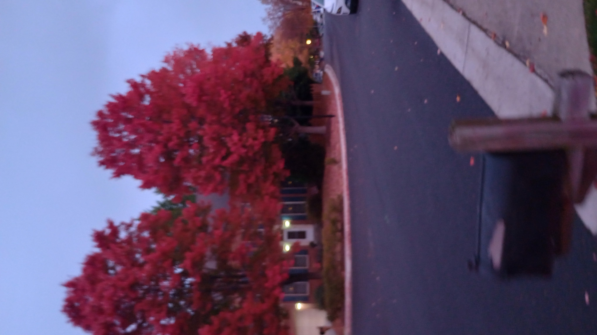

ok so what i plan for this page is that itll be like, a documentary of what i do outside of the house, there are many thingys i have found outside that i want to share!!, many ominous stuff too :] i am planning separate pages for separate things, (facility, treehouse, locked box) so like, maybe thisll just be the page where i put random images and whatever i see!!
have this nice picture of a red tree :D
